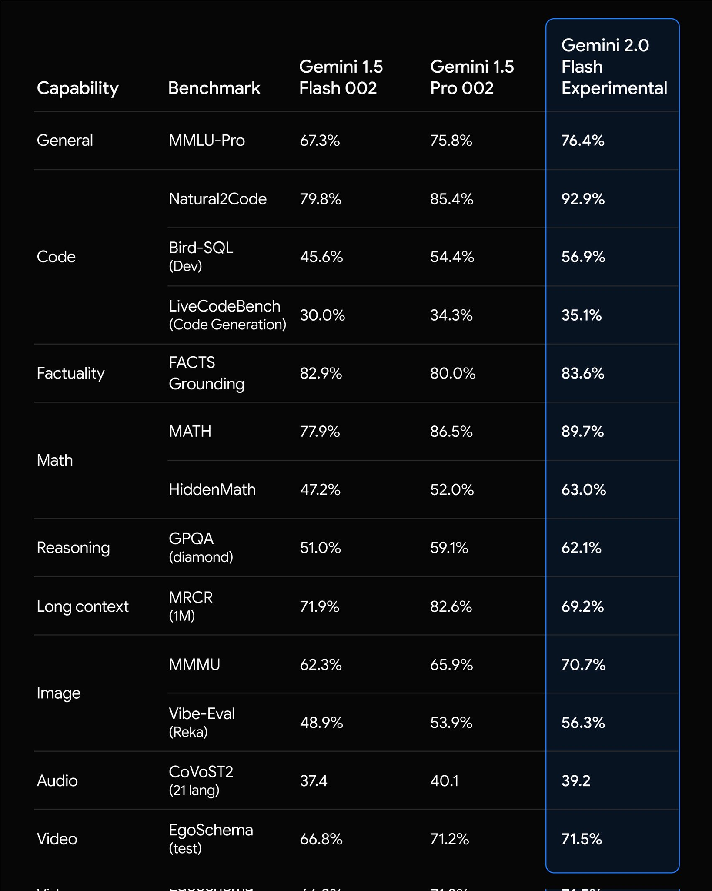

Gemini (Part I) - Why You Should Consider Gemini
Gemini in a Nutshell
Gemini is a collection of smaller LLMs designed to deliver faster performance and lower costs while offering capabilities comparable to larger models. The recently released Gemini 2.0 builds on this foundation with enhanced performance, innovative real-time features, and a competitive price point that sets it apart from the competition.
In this series, we’ll explore the exciting possibilities with Gemini, including the new real-time features introduced in 2.0. To start, we’ll review the range of Gemini models, their unique capabilities, and how to choose the right one for your needs. From there, we’ll dive into how these models stack up against the competition in terms of both results and cost.
The core hypothesis driving this series is that the future lies in agentic systems composed of smaller and more cost efficient models. I believe organizations will achieve greater value by orchestrating smaller and general-use models to meet their goals, rather than by relying solely on large and expensive LLMs to address every use case.
The Gemini Family
Figure 1: The Gemini Famly (google)
{kind=link}
When in doubt, use “Flash” to start and see how far that gets you. Personally, I’m getting great results for structured output tasks with Flash and sometimes even the 8B parameter variant.
Performance
Internal Benchmarks
To better understand how the latest Gemini 2.0 Flash Experimental model stacks up against its predecessors, let’s examine the reported benchmark results.
The following table highlights the performance improvements compared to the Gemini 1.5 generation models.
 Figure 2: Reported benchmarks (google)
{kind=link}
The 1.5 models have worked really well for me across a number of projects and it looks like the 2.0 generation represents a substantial move in the right direction across the board! According to Google’s announcement post …
“Gemini 2.0 Flash builds on the success of 1.5 Flash, our most popular model yet for developers, with enhanced performance at similarly fast response times. Notably, 2.0 Flash even outperforms 1.5 Pro on key benchmarks, at twice the speed”
How Does It Compare to the Competition?x
Evaluating performance across large language models (LLMs) can be challenging due to the abundance of available benchmarks, not all of which provide consistent or reliable insights. Among these options, one resource that I’ve found consistently aligns with my own experiences is lmarena.ai (formerly LMSYS), which I will reference for this comparison.
Figure 2: Overall performance comparison across leading LLM models (courtesy of lmarena.ai)
{kind=link}
{kind=link}
Figure 3: Detailed breakdown of performance metrics across different categories (courtesy of lmarena.ai)
{kind=link}
{kind=link}
That’s alot of Geminis up there at the top!
Cost
As AI becomes an increasingly integral part of application infrastructure, the cost of using these models is becoming a critical consideration. Understanding how costs vary across providers like OpenAI, Anthropic, and others is essential for making informed decisions. So, how do the costs of using these models generally compare, and where does Gemini stand in this landscape?
| Provider | Model | Max Tokens | Input Cost (per 1M) | Output Cost (per 1M) |
|---|---|---|---|---|
| OpenAI | GPT-4o | 128,000 | $2.50 | $10.00 |
| OpenAI | GPT-4o mini | 128,000 | $0.15 | $0.60 |
| OpenAI | GPT-4 Turbo | 128,000 | $10.00 | $30.00 |
| OpenAI | GPT-3.5 Turbo | 16,384 | $0.50 | $1.50 |
| Anthropic | Claude 3.5 Sonnet | 200,000 | $3.00 | $15.00 |
| Anthropic | Claude 3.5 Haiku | 200,000 | $0.25 | $1.25 |
| Gemini 1.5 Pro | 1,048,576 | $1.25 | $5.00 | |
| Gemini 1.5 Flash | 1,048,576 | $0.075 | $0.30 |
Note: Input tokens refer to the tokens in the prompt sent to the model, while output tokens are those generated by the model in response.
The cost of using Gemini is often a fraction of the cost of other models. In fact, for “experimental” models, you aren’t billed at all
You aren’t billed for the usage of experimental Google models.
Generative AI on Vertex AI pricing for experimental models
Conclusion
If the future is indeed agentic, as I hypothesize, and cost-efficient, high-performing, general-use models play a central role in that vision, then Gemini emerges as a compelling choice. Based on the comparison of performance between Gemini models and those of other major API providers, combined with its cost-effectiveness, Gemini is undoubtedly worth considering as part of your AI strategy moving forward.
In the next blog in this series, we’ll explore the basics of using Gemini and dive into some of its standout features that set it apart from the competition using the new and improved unified SDK in 2.0. This unified SDK is one of the more exicting bits to developers like myself that have had to bounce back-and-forth between using the Gemini API and Vertex API to talk with Gemini. With 2.0, we finally have one SDK to rule them all (even if it still means we need to understand how the two different API options vary and when to use one over the other … something we’ll talk about in the next post as well).